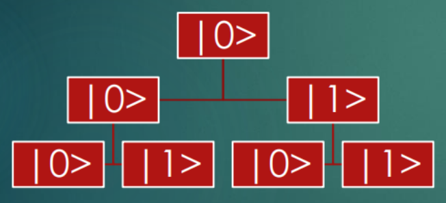

Kvantna mehanika
Veoma brz uvod
Pristup
- Ovde se nećemo baviti kvantnom mehanikom kakva se obično radi.
- Ovo je zato što nas, fundamentalno, ne zanimaju iste stvari kao fizičare
- Ne želimo da računamo zračenje ili bilo šta slično. Zanimaju nas kvantna stanja ne i kojim fizičkim fenomenima odgovaraju.
- Baš kao što kada razmišljamo o klasičnim računarima nas zanima 0 i 1 i prelaz između njih. Nigde nas ne zanima da li su električni ili optički ili mehanički. Fundamentalno nema razlike u tome kako ih programiramo.
Kvantna mehanika kao progresija
- Deterministički sistemi koji koriste logičke vrednosti vode u…
- Probabilističke sisteme koji koriste verovatnoće koji vode u…
- Kvantne sisteme koje koriste amplitude.
Šta je amplituda?
- Fundamentalno ono što karakteriše amplitude (za razliku od verovatnoća) jeste da mogu biti negativne, pozitivne, ili kompleksne.
- Ovo je jako teško zamisliti: mogli bi da zamislimo šta znači biti 50% na jednoj i 50% na drugoj poziciji. Ali šta znači biti -70.71% na jednoj i 70.71% na drugoj?
- Ova teškoća vizualizacije je jedan od glavnih razloga zašto kvantna mehanika izaziva glavobolje i danas.
- Uprkos tome matematički aparat koji se koristi nije tako strašan.
Hajde da počnemo od verovatnoće
- Zamislimo vektor mogućih događaja \(\Omega = (p_1, p_2, ..., p_N)\)
- U klasičnoj verovatnoći uspostavljenoj aksiomatskim sistemom Kolmogorova važi da:
- \(\sum \Omega = \sum_{i=1}^{N}p_i = 1\)
- Ima smisla, zar ne? Verovatnoća da će se nešto desiti je ravno 1.
Norme
- Ovo ograničenje se može formulisati i tako što se kaže da, u verovatnoći, 1-norma skupa događaja mora biti 1.
- 1-norma je način računanja magnitude vektora tako što se sumiraju apsolutne vrednosti svih dimenzija
- Ovo se još zove i Menhetn Razdaljina.
- Šta se desi ako koristimo, recimo, 2-normu?
2-norma?
- Znate je, ali verovatnije kao Pitagorinu Razdaljinu ili Euklidovu Razdaljinu ili jednostavno magnitudu vektora
- \(\left \| \Omega \right \|_2 = \sqrt{\sum_{i=1}^{N}p_i^2}\)
- Ako onda umesto uslova \(\left \| \Omega \right \|_1 = 1\) važi \(\left \| \Omega \right \|_2 = 1\)
- Umesto verovatnoće onda imamo kvantnu mehaniku.
- Manje-više.
Bit u kvantnoj mehanici
- Deterministički bit je ili 1 ili 0.
- Ako zamislimo probabilistički bit, on je ili 0 ili 1 sa verovatnoćom \(p\) i \(1-p\).
- A kvantni bit? Kvantni bit ima dve amplitude, \(\alpha\) i \(\beta\) čija je suma kvadrata 1
- \(\alpha^2 + \beta^2 = 1\) (što opisuje krug) nasuprot \(p + 1-p = 1\)
- Neka da je naš kvantni bit u stanju da je amplituda \(\alpha\) 1 i amplituda \(\beta\) 0, što je OK jer zadovoljava uslov. Šta je onda stanje bita ako odemo i pogledamo?
Merenje
- Pre ili kasnije, moramo meriti stanje našeg kvantnog sistema.
- Merenje proizvodi ‘klasičan’ rezultat, tj. ili će biti 0 ili 1 kada se ode i pogleda.
- Postoje naravno verovatnoće da će biti 0 i verovatnoća da će biti 1. Koje su to verovatnoće?
- Pa \(p_0 = \alpha^2\) i \(p_1 = \beta^2\) naravno.
Merenje
- Drugim rečima, naše kvantno stanje može da bude pomešano koliko god hoćete, u jednom trenutku će se svesti na merenje koje će proizvesti stohastički rezultat.
- Kada merimo, moramo da stanje merimo u nekoj bazi. To su dimenzije u odnosu kojih merimo stanje.
Čemu amplitude?
- Zašto je onda ikome korisno da priča o amplitudama kada se uvek stvari završe u verovatnoćama i konkretnim vrednostima?
- Zato što, ako imamo amplitude, onda možemo da radimo potpuno drugačije operacije nad našim kubitima (i drugim kvantnim sistemima) koje proizvode razna neobična stanja koja eventualno kolabiraju u verovatnoće.
- Ono što je između je ono što čini kvantne sisteme čudnim.
Unitarne matrice sa kompleksnim elementima
- U opštijem slučaju unitarne matrice sa kompleksnim elementima važi \(A^*A = AA^* = I\) odnosno, inverzija matrice je jednaka njenoj hermitijanskoj transpoziciji.
- Hermitijanska transpozicija je rezultat koji se dobije ako se za neku matricu prvo nađe transponovana, a onda se za svaki element individualno uzme kompleksna konjugovana vrednost, tj. obrne se znak imaginarnog dela.
- Bilo koja matrica koja ispunjava ovaj uslov predstavlja smislenu transformaciju nad nekim kvantnim stanjem.
Primer unitarne matrice
\[
\begin{bmatrix}
1 & 0 \\
0 & -i
\end{bmatrix}
\]
Tofolijeva matrica
\[
T = \begin{bmatrix}
1 & 0 & 0 & 0 & 0 & 0 & 0 & 0 \\
0 & 1 & 0 & 0 & 0 & 0 & 0 & 0 \\
0 & 0 & 1 & 0 & 0 & 0 & 0 & 0 \\
0 & 0 & 0 & 1 & 0 & 0 & 0 & 0 \\
0 & 0 & 0 & 0 & 1 & 0 & 0 & 0 \\
0 & 0 & 0 & 0 & 0 & 1 & 0 & 0 \\
0 & 0 & 0 & 0 & 0 & 0 & 0 & 1 \\
0 & 0 & 0 & 0 & 0 & 0 & 1 & 0 \\
\end{bmatrix}
\]
Dirakova ket notacija
- Kad pričamo o kvantnom sistemu dobro je imati lepu kompaktnu notaciju
- Istorijski se koristi Dirakova ket notacija
- Tako da ako želimo da opišemo onaj kubit sa početka priče gde je ampltuda nula \(\alpha\) a amplituda jedan \(\beta\) pisali bi
- \(\alpha|0\rangle + \beta|1\rangle\)
Primer kvantne interakcije
Neka imamo stanje \(v = 1|0\rangle\) i matricu \[
U = \begin{bmatrix}
\frac{1}{\sqrt{2}} & \frac{1}{\sqrt{2}} \\
\frac{1}{\sqrt{2}} & -\frac{1}{\sqrt{2}}
\end{bmatrix}
\] onda \(v' = Uv = \frac{1}{\sqrt{2}}|0\rangle + \frac{1}{\sqrt{2}}|1\rangle\) A ako primenimo transformaciju opet onda \(v'' = Uv' = 1|1\rangle\)
Primer kvantne interakcije
- Šta se ovde desilo?
- Imamo operaciju koja bi trebalo da ubacuje slučajnost. Počnemo sa apsolutno sigurnim stanjem i ubacimo transformaciju koja čini obe mogućnosti jednako verovatnim. Tj. ako merimo vrednost međurezultata dobićemo ili 1 ili 0. sa verovatnoćom ravno 0.5.
- Onda primenimo istu tu operaciju. U svetu obične verovatnoće, nema tih slučajnosti koje bi mogli dodati koji bi nas vratili na sigurnu verovatnoću.
- Ali ovde, ista ta operacija nam obrne vrednost, drugim rečima pretvori ekviprobabilne događaje u sigurno dobijanje vrednosti 1.
Dijagram prelaza stanja

Dijagram prelaza stanja
- Jedna interpretacija ovoga jeste da se posmatraju staze kroz ovaj dijagram prelaza stanja. Do konačne 0 dolaze dve staze (0 do 0, pa do 0, i 0 do 1 pa do 0) ali te staze, kada se pogleda, imaju pozitivnu i negativnu amplitudu.
- Ovo znači da su u poziciji destruktivne interferencije.
- Kao rezultat: nikad se ne dese.
- Putanje koje vode do 1 imaju pozitivne amplitude te interferiraju konstruktivno.
Mešana stanja
- Šta bude ako imamo mešana stanja: malo probabilistička, malo kvantna.
- U takvim stanjima imamo određenu verovatnoću da smo u jednom kubit-stanju, i određenu, drugu, verovatnoću da smo u drugom kubit-stanju.
- Ovo se rešava kroz matematički konstrukt poznat kao matrica gustine.
- Za neki vektor amplituda sa \(N\) elemenata se posmatra, prvo, \(NxN\) matrica gde je svaki element \(N_{i,j}\) proizvod \(i\)-tog i \(j\)-tog elementa tog vektora amplituda.
- Da skratimo priču, to zovemo NN matrica. (Nije zvaničan termin).
Matrica gustine
- Ako imamo nekoliko vektora nad kojim imamo distribuciju verovatnoće (klasične verovatnoće) onda je matrica gustina ponderisana suma NN matrica za sve te vektore gde su faktori ponderisanja relativne verovatnoće.
Matrica gustine
Za 0.25 verovatnoću \(\alpha|0\rangle + \beta|1\rangle\) i 0.75 verovatnoću \(\alpha|0\rangle - \beta|1\rangle\) imali bi \[
D = 0.25 \cdot \begin{bmatrix}
\alpha^2 & \alpha\beta \\
\beta\alpha & \beta^2
\end{bmatrix} + 0.75 \cdot \begin{bmatrix}
\alpha^2 & -\alpha\beta \\
-\beta\alpha & \beta^2
\end{bmatrix} = \begin{bmatrix}
\alpha^2 & -0.5\alpha\beta \\
-0.5\beta\alpha & \beta^2
\end{bmatrix}
\]
Matrica gustine i nerazlučivost
- Mešana stanja su nerazlučiva
- To znači da ako odradimu kvantnu operaciju nad mešanim stanjem opisanim matricom gustine kao izlaz dobijemo još jedno mešano stanje
Kombinovanje kvantnih stanja
- Šta da radimo ako imamo više kvantnih stanja sa poznatim amplitudama i hoćemo da opišemo kvantno stanje koje je rezultat kombinacije svih tih stanja?
- Ovo nije nerealistična situacija: ako imamo kvantni računar koji operiše nad reči sa, npr, 16 kubita možemo da pričamo o stanju celog računara kao jednom kvantnom stanju? Da li je to moguće?
- Da, kroz operaciju tenzorskog proizvoda.
Tenzorski proizvod kvantnog stanja
\[
(\alpha|0\rangle + \beta|1\rangle) \otimes (\gamma|0\rangle + \delta|1\rangle) = \alpha\gamma|00\rangle + \alpha\delta|01\rangle + \beta\gamma|10\rangle + \beta\delta|11\rangle
\]
Razdvojiva i spregnuta stanja
- Ako neko dvo-kubitno stanje možemo da napišemo kroz tenzorski proizvod dva jednokubitna stanja, onda za to stanje kažemo da je razdvojivo (eng. Separable).
- Ako, sa druge strane, imamo dvokubitno stanje takvo da je predstavljanje stanja kroz tenzorski proizvod jednokubitnih stanja nemoguće, onda imamo spregnuto (eng. Entangled) stanje.
- Da, ono koje je legendarno u naučnoj fantastici i popularnoj nauci.
- Evo čuvenog primera, prilagođenog iz rada Ajnštajna, Podolskog, i Rozena \(\frac{1}{\sqrt{2}}|00\rangle + \frac{1}{\sqrt{2}}|11\rangle\)
Interpretacija EPR
- Iz primera se može videti što se ovo zove i ‘upletenost’
- Zamislite za momenat (znam da smo obećali da nas ne zanima šta su fizički nosioci kvantnog ponašanja) da su u pitanju dva elektrona i kvantno obeležije je spin koji može biti \(-\frac{1}{2}\) ili \(\frac{1}{2}\)
- Ovo kaže da ako izmerimo ovaj sistem 50% vremena će imati stanja koja su 00 i 50% vremena 11, odnosno, spin će biti ili jedan ili drugi, ali će biti isti u oba stanja.
- Ova dva elektrona su, onda, upletena.
Teorema o nemogućnosti kloniranja
Nema te procedure konzistentne sa kvantnom mehanikom koja kao ulaz uzme nepoznatno kvantno stanje i kao izlaz proizvede dva primerka tog istog, nepoznatnog stanja.
Dokaz teoreme o nemogućnosti kloniranja
Neka je kopirano stanje kubit \(\alpha|0\rangle + \beta|0\rangle\) onda procedura kloniranja uzima taj kubit i prazan kubit i proizvede kao izlaz taj isti kubit i kopiju u praznom kubitu. Dakle: \[(\alpha|0\rangle + \beta|1\rangle|0\rangle) \mapsto (\alpha|0\rangle + \beta|1\rangle) \otimes (\alpha|0\rangle + \beta|1\rangle)\] \[=\alpha^2|0\rangle|0\rangle + \alpha\beta|0\rangle|1\rangle + \alpha\beta|1\rangle|0\rangle + \beta^2|1\rangle|1\rangle\] Ali ovo je jasno nelinearno, a sve unitarne matrice su i linearne. Dakle nema takve matrice i konsekventno nema takve operacije koja klonira proizvoljno stanje.
Fizička interpretacija
- Ova teorema takođe proizilazi direktno iz Hajzenbergovog principa neodređenosti, budući da ako bi imali kvantni sistem od jedne čestice, i ako bi mogli da ga kloniramo, onda bi mogli da napravimo dve kopije i kod jedne izmerimo impuls, do proizvoljne preciznosti, a kod druge poziciju, do proizvoljne preciznosti, te ako ima kloniranja nema principa neodređenosti.
- Sa druge strane, ako nema principa neodređenosti, onda bi u principu merenjem mogli da odredimo sve osobine nekog stanja i da ga kloniramo tako.
Programerska interpretacija
- Ovo je jako bizarno budući da to predstavlja nešto što rad sa klasičnim sistemima čini trivijalnim, a kvantni sistemi čine nemogućim.
- Ako imamo bajt 1010 1100 možemo ga kopirati u 1010 1100 trivijalno. To je manje-više i najlakša stvar koju možemo raditi sa njim.
- Ista stvar sa kubitima je apsolutno nemoguća. Ovo čini transfer kubita jako teškim.
- Jedini mogući metod je ’kvantna teleportacija’ koja omogućava da se neki kubiti prebace sa jednog mesta na drugo kroz klasičan kanal, uz to da se original uništi.
- Ovo se sa klasičnom informacijom ne zove ’teleportacija’ no samo, ‘premeštanje.’
Šorov algoritam
Pojednostavljen primer primene
Šta je naš problem
- Imamo složeni broj N koji hoćemo da razbijemo na proste činioce. Ovo se još zove faktorizacija tog broja.
- Ovo je teško: klasični računari ovo rade u eksponencijalnom vremenu.
- Najefikasniji glasični algoritam ovo radi sa eksponentom od \(d^{\frac{1}{3}}\) gde je d broj cifara. Dakle vreme je, za neku bazu b, \(b^{d^{\frac{1}{3}}}\)
- Rekord je d = 232 što je, distribuirano, oduzelo oko 2000 CPU-godina na modernim procesorima.
- Drugim rečima, dovoljno veliki brojevi ne mogu da se razbiju na proste činioce. Moderna kriptografija je bazirana na ovome.
Šorov algoritam
- 1995 Šor je pokazao da, sa kvantnim računarom, je moguće problem rešiti u vremenu koje je polinomijalno. Trenutni najbolji rezulatti zahtevaju \(10d\) kubita i \(d^3\) vremena.
- Ovo znači da sa dovoljno dobrim kvantnim računarom, faktorizacija brojeva je trivijalan problem.
- Ovo je… uzbudljiv rezultat budući da se trenutno jako puno uzdamo u kriptografiju.
Traženje perioda
- Šorov algoritam počinje napadom na problem vezan za faktorizaciju: traženje perioda modularne eksponent funkcije.
- Kratko rečeno: Ako imamo celi broj N i a, treba da nađemo najmanji pozitivni celi broj r, takav da je \(a^r - 1\) umnožak N. Broj r je onda period \(a mod N\).
- Šta to znači? To znači da kada bi posmatrali niz stepena modulo N neke baze a, onda bi ona počela da ponavlja vrednosti posle r koraka.
Primer traženja perioda
Neka je N=15 i a=7. Onda se vidi da: \[
7^1 - 1 = 6
\] \[
7^2 - 1 = 48
\] \[
7^3 - 1 = 342
\] \[
7^4 - 1 = 2400 = 160 * 15
\]
Primer traženja perioda
Dakle, iz ovoga sledi da je periodičnost 4, i zaista ako izračunamo ostatak sa 15 za vrednosti \(7^i\) za i od 1 do 9 dobijemo: 1, 7, 4, 13, 1, 7, 4, 13, 1, 7. Mesto gde je modulo 1 je tačka perioda i prvo takvo mesto je mesto gde će baza otići na r-ti stepen.
Od periodičnosti do faktorizacije
- Ako zamislimo da imamo magični algoritam za traženje perioda (uskoro) onda kako da to pretvorimo u sistem faktorizacije?
- Zamislimo da znamo da je \(N = p_1p_2\), broj sa dva faktora. Ako napadamo RSA to je i slučaj.
- Prvo: Odaberemo slučajno \(a\) između \(2\) i \(N-1\)
- Drugo: Proračunamo najveći zajednički delilac \(N\) i \(a\).
- Treće, ako je rezultat različit od \(1\), to je \(p_1\), i mi smo gotovi.
- Četvrto, ako je rezultat \(1\), magično sračunamo period \(a_i mod N\) koji je \(r\).
- Peto, ako je \(r\) neparan, skačemo na prvi korak.
Od periodičnosti do faktorizacije
- Eventualno \(r\) će biti parno i to će biti najmanji celi broj takav da \(a^r - 1\) je umnožak \(N\). Onda:
- \(a^r - 1 = (a^{\frac{r}{2}} - 1)(a^{\frac{r}{2}} + 1)\)
- Znamo da \(a^r - 1\) nije umnožak broja \(N\) zato što bi onda period bio \(\frac{r}{2}\) a znamo da to nije. Ako uzmemo kao predpostavku da \(a^r + 1\) takođe nije umnožak \(N\) onda imamo situaciju dva broja, nikoji od kojih nije umnožak \(N\) čiji proizvod jeste umnožak \(N\). To može samo da bude ako je jedan od činilaca \(a^{\frac{r}{2}} - 1\) \(p_1\) a jedan od činilaca \(a^{\frac{r}{2}} + 1\) \(p_2\) ili obratno.
Od periodičnosti do faktorizacije
- Onda sve što moramo da uradimo jeste da sračunamo najveći zajednički delilac za \(N\) i za \(a^{\frac{r}{2}} \pm 1\) i rešili smo naš problem.
- Ako je slučaj da je baš \(a^{\frac{r}{2}}+1\) umnožak \(N\) onda moramo odbaciti vrednost koju smo izabrali i pokušati opet.
- Ovo će biti retko, ali je moguće.
Šta može kvantni računar
- Popularna miskoncepcija je da kvantni računari, zbog superpozicija, ‘probaju sve opcije odjednom’
- Oni apslutno tako ne rade, uprkos tome, postoji kvantni paralelizam nekakve vrste
- Njega odlikuje sposobnost da se uzme kompleksna funkcija i da se odrede (brzo) njene globalne osobine koje nisu izračunljive iz njene evaluacije na relativno malom broju tačaka
- Periodicitet modularne eksponencijacije je baš jedna takva osobina.
Kako radi ‘magični’ algoritam?
Za unitarni operator \(U_a\) koji implementira modularno množenje \(x \mapsto ax mod N\) sopstvene vrednosti odgovarajuće matrice će imati formu \(e^{j\phi}\) gde je \(\phi = \frac{2 \pi k}{r}\) za \(k \in \mathbb{Z}\).
Kako radi ‘magični’ algoritam
- Tačna procedura računanja kvantne faze koju nameće operator (to je ovo \(\phi\)) je spektakularno kompleksna, ali srećom je već odrađena za nas.
- Detalji su ovde: https://qiskit.org/textbook/ch-algorithms/quantum-phase-estimation.html
- Kratko rečeno: ovo je moćna operacija i notacija za nju je QPE.
Šorov algoritam i QPE
- Proračunamo QPE vrednosti za porodicu operatora \(U_b\) gde je \(b = a,a^2,a^4,a^8...\) i tako sve do stepena \(a\) koji odgovara grubo vrednosti N.
- Ovo merenje se može potpuno paralelizovati
- QPE je jedna od onih stvari koje imaju nasumičnu šansu greške, ali uz dovoljno merenja signal će nadjačati šum.
- Kada imamo fazu, možemo naći r.
Kako raditi modularno množenje?
- Kvantni algoritmi apsolutno mogu da pozivaju potpuno klasične pod-funkcije.
- Ako je BPP podskup BQP onda su valjda naši klasični programi samo ne osobito bistri kvantni programi?
- Ne baš, ali blizu.
- Problem je u tome što klasičan kod kvari superpozicije. Da to ne bi radio mora biti konvertovan u reverzibilnu formu.
- To znači da, prvo, mora biti napravljen od kvantnih kapija i, drugo
- Mora da ‘počisti iza sebe’ odnosno da iza izvršavanja ima samo izlaz, ništa od pod-rezultata, tj. da ne pravi pobočna dejstva.
Reverzibilnost
- Centralna ideja je da se svaka klasična kapija pretvori u varijantu koja ima isti broj ulaza i izlaza i radi jednako dobro u oba smera
- Onda se napravi blok koi radi proračun kroz te kapije, neka su \(G_1, G_2, G_3, G_4, G_5\) recimo
- Zbog toga kako kapije rade u njih ulazi sva memorija koju će da koriste kao ulaz
- Kad dobijemo njihov izlaz mi moramo da počistimo tu memoriju. To radimo tako što pokrenemo \(G_5, G_4, G_3, G_2, G_1\) i uradimo sve što smo radili ranije unazad
- Ovo se zove ‘uncomputing’
- Rezultat ovoga je da se ovo ponaša kao žica, a da mi iz sredine ‘ukrademo’ f(x)
Reverzibilnost
Izvor slike: https://quantum-computing.ibm.com/docs/iqx/guide/shors-algorithm (C) IBM.